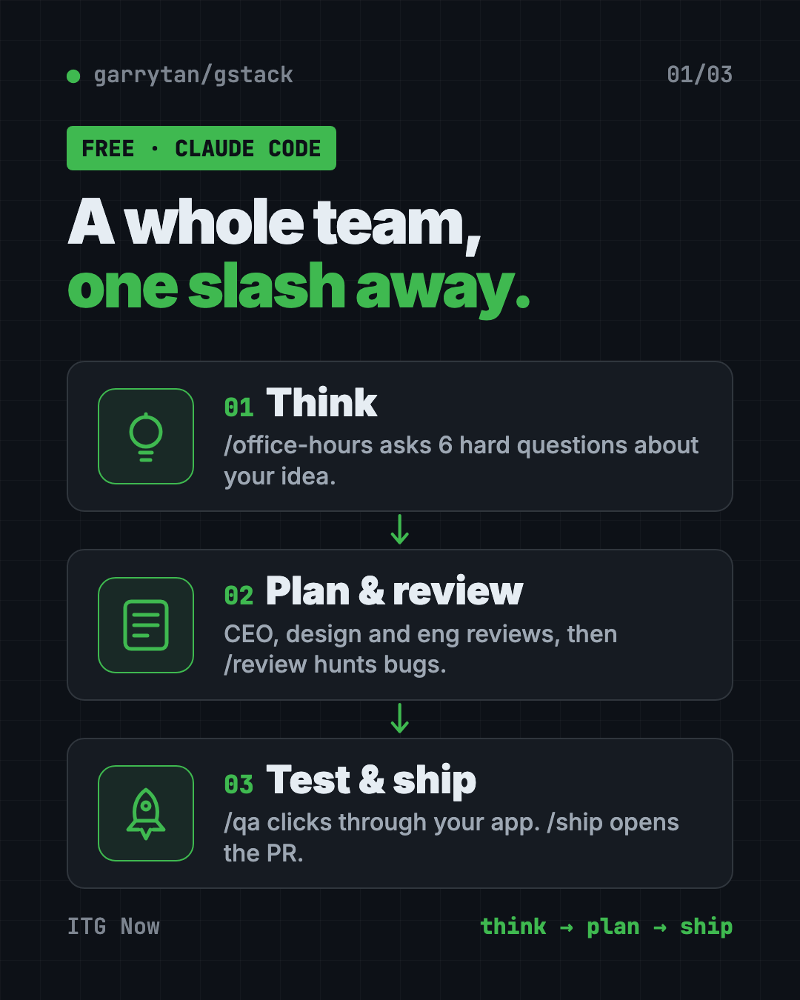
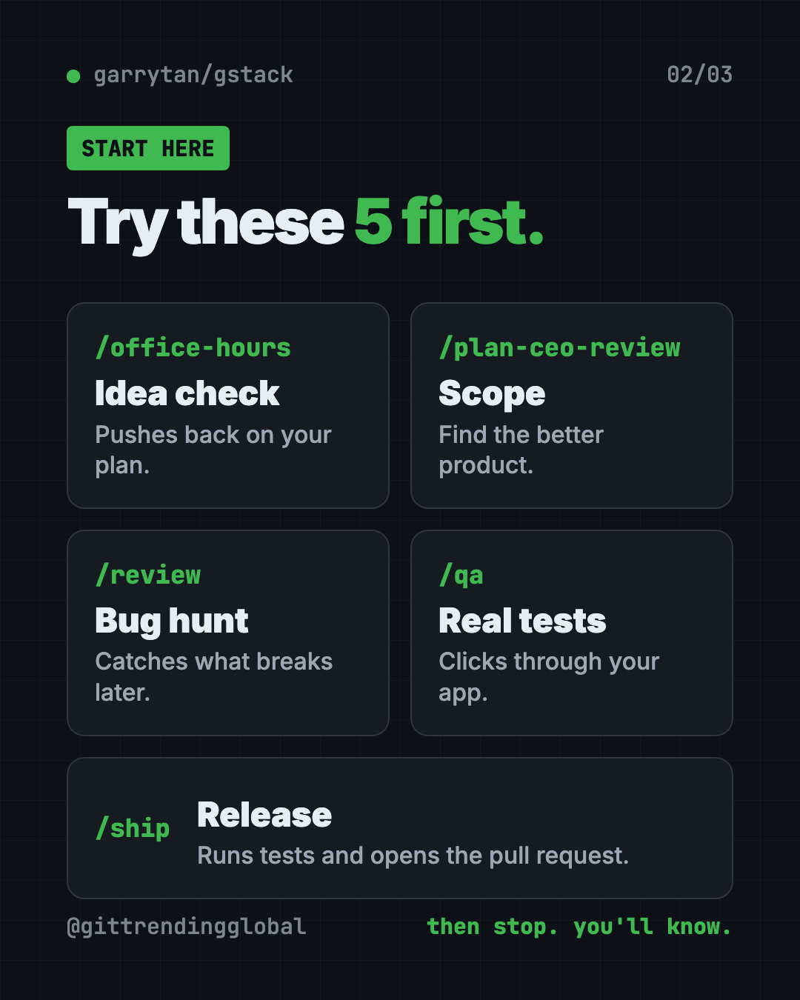
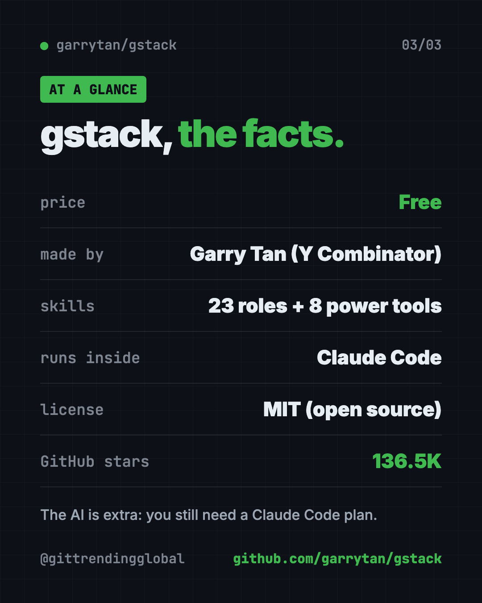

gstack: Garry Tan's Free Claude Code Skills (2026 Guide)
- Published 15 Oct 2026
- Updated 16 Oct 2026
- 8 min read
- License MIT
- By the ITG Now team
gstack claude code skills are a free set of shortcuts that turn Claude Code into a small virtual team. One command plays a CEO, another a designer, another a bug hunter, another a release engineer.
It was made by Garry Tan, the President and CEO of Y Combinator, the famous startup program. He calls it the setup he uses every day. This guide explains what it does, who it's for, and how to try it in a few minutes.
Key takeaways
- Free and open source. MIT license. The README says "No premium tier, no waitlist."
- A team in a box. The README counts 23 specialists and 8 power tools, all typed as slash commands.
- Built for Claude Code. It also installs on Codex, Cursor and other AI helpers, but most of those are marked experimental.
- Very popular. About 136.5K stars on GitHub. Stars are like bookmarks.
- Not a beginner coding course. You still need Claude Code and a few free tools on your computer.
What is gstack?
Claude Code is Anthropic's AI coding helper. It lives in your terminal (the text window where you type commands) and writes code for you.
With a blank prompt, it builds exactly what you type. It rarely asks, "Is this the right idea?" It can skip the dull parts too, like testing and careful reviews.
gstack fixes that by giving Claude Code roles. Each role is a "skill," which is a saved set of instructions. You call one by typing a slash and its name, like /review.
The README describes it as a CEO who rethinks the product, an engineering manager who locks the plan, a designer who catches sloppy AI design, a reviewer, a QA lead who opens a real browser, a security officer and a release engineer.
How do gstack Claude Code skills work?
The skills run in the order a work sprint runs. The README sums it up as: Think, Plan, Build, Review, Test, Ship, Reflect.
Each step hands notes to the next one. /office-hours writes a design doc that /plan-ceo-review reads. The engineering review writes a test plan that /qa picks up later. So nothing gets lost between steps.

How to use gstack (real examples)
Here are everyday ways people use it, based on what the skills do in the README:
- Test a startup idea. Type
/office-hoursand describe your idea. It asks six hard questions and pushes back on how you framed it. Then it writes a design doc. - Shrink a big plan. Run
/plan-ceo-reviewon a feature idea. It has four modes, from "expand" to "reduce," so it can help you cut scope. - Catch bugs before launch. Run
/reviewon code you changed. It hunts for bugs that pass basic checks but break later, and fixes the obvious ones. - Click through your app like a tester. Run
/qawith your test website address. It opens a real browser, tries your flows and fixes what it finds. - Ship safely.
/shipruns tests and opens a pull request (a change waiting for approval)./carefulwarns you before risky commands, like deleting folders.
The README even shows a sample session. Someone asks for a "daily briefing app." After /office-hours, the AI points out they're really describing a personal chief of staff, then suggests shipping the smallest version first.
💡 Tip: Start with
/office-hourseven if you think your idea is clear. Its whole job is to question you before any code exists.
Which gstack skill should I use?
There are dozens, so here's a short map of the ones most people meet first:
| Skill | Plays the role of | What it does |
|---|---|---|
/office-hours |
YC office hours | Six tough questions, then a design doc |
/plan-ceo-review |
CEO | Finds a better product inside your request |
/plan-eng-review |
Engineering manager | Locks data flow, edge cases and tests |
/plan-design-review |
Senior designer | Rates design choices 0 to 10 |
/review |
Staff engineer | Finds bugs that break in real use |
/qa |
QA lead | Tests in a real browser and fixes bugs |
/cso |
Security officer | Runs a security audit |
/ship |
Release engineer | Runs tests, pushes, opens a PR |
/retro |
Engineering manager | Weekly look back at what shipped |
If you don't want to pick, /autoplan runs the CEO, design, developer experience and engineering reviews for you, one after another.

Is gstack free?
Yes. The code is free under the MIT license, and the README says there is no premium tier and no waitlist.
The AI itself is a separate cost. You need Claude Code, which has its own plans. Some reviews also ask a second AI for an outside opinion, using your own Codex or Claude Code login.
How to install gstack
You need three free tools first: Claude Code, Git (tracks code changes) and Bun (runs code). The README asks for Bun 1.4.2 or newer. Windows users also need Node.js.
The README's fastest way is to let Claude do it. Open Claude Code and paste the install line from the README. The core command it runs is below.
Copy and paste this:
git clone --single-branch --depth 1 https://github.com/garrytan/gstack.git ~/.claude/skills/gstack && cd ~/.claude/skills/gstack && ./setup
The README's full paste also asks Claude to add a short gstack section to your CLAUDE.md file. That file is where Claude Code keeps notes about your project.
The README timed setup at 31 seconds on a fast cloud machine. Slower laptops and networks take longer.
Want it on another AI helper, like Codex? The README uses a --host option. Copy and paste this:
git clone --single-branch --depth 1 https://github.com/garrytan/gstack.git ~/gstack
cd ~/gstack && ./setup --host codex
⚠️ Heads up: On Windows, gstack runs through Git Bash or WSL. Windows 11's Smart App Control can block some of its tools. The README's fixes are to run it inside WSL or turn that setting off.
To remove it later, copy and paste this:
~/.claude/skills/gstack/bin/gstack-uninstall

Let Claude or Codex set it up for you
Claude Code and OpenAI Codex are AI helpers that run setup steps on your computer. You paste a request, it does the work, and you approve each step.
Copy and paste this:
Please help me install gstack from github.com/garrytan/gstack.
1. Check that I have Git, Bun (1.4.2 or newer) and, on Windows, Node.js. Install anything missing.
2. Follow the README's install steps for Claude Code.
3. Explain each command in plain words before you run it.
4. When it's done, show me the 5 skills from the README's quick start.
Then try asking:
/office-hours I want to build a simple booking page for my yoga classes.
Turn off gstack's outside reviews and update check. Show me the settings you changed.
Run /review on my latest changes and explain each problem like I'm not a programmer.
gstack at a glance
| Price | Free (you still pay for your AI helper) |
| Works offline | No, Claude Code needs the internet |
| Platforms | Mac, Linux, Windows 11 (Git Bash or WSL) |
| License | MIT |
| Skills | 23 specialists and 8 power tools |
| GitHub stars | About 136.5K |
| Best for | Founders, first-time Claude Code users, tech leads |
Is gstack private?
Mostly, and the README is upfront about it. Usage stats are off unless you say yes. Even then, it never sends your code, file paths, repo names or prompts.
Two things are on by default. An update check asks GitHub for the latest version. And "outside reviews" send the plan or code to a second AI, using your own login. You can switch both off with gstack-config.
⚠️ Heads up: Outside reviews send your code to another AI company. If your project is private, decide before your first run whether you want that on.
Our take
gstack gives a solo builder the habits of a full product team. Question the idea, plan it, review it, test it, ship it. That's useful even if you never read a line of the code it writes.
What we like:
- Free, with no paid tier.
- The order of steps stops you from building the wrong thing fast.
- Clear privacy rules, with switches for each kind of network traffic.
- A short quick start: try five commands and stop.
What to watch for:
- It's big. Dozens of skills can feel like a lot at first.
- It only shines inside Claude Code. Other AI helpers are mostly "experimental."
- Some skills need extra setup, like an OpenAI key for design mockups.
- Windows has more hoops than Mac or Linux.
Want more add-ons like this? See Superpowers, another free skill pack for AI coders and Matt Pocock's skills collection. For saving on AI costs while you work, read our Caveman guide.
FAQ
What is gstack used for?
gstack gives Claude Code a set of roles, like CEO, designer, reviewer and tester. You use them to plan, check and ship software in a set order.
Who made gstack?
Garry Tan, President and CEO of Y Combinator. He shares it on GitHub under his own account, garrytan.
Is gstack free to use?
Yes. It's free and open source under the MIT license. You still pay for the AI helper it runs inside, like Claude Code.
Does gstack work with Codex or Cursor?
Yes, through the --host setup option. The README marks Claude Code as fully supported and most others, including Codex and Cursor, as experimental.
Do I need to know how to code to use gstack?
It helps, but it's not required to start. Planning skills like /office-hours are plain conversation. Shipping and testing skills assume a real software project.
Does gstack send my code anywhere?
Usage stats are off unless you opt in, and they never include your code. Outside reviews do send code to a second AI with your own login, and you can turn that off.
Get gstack: github.com/garrytan/gstack
More free design tools
- PhotoCraft PhotoCraft is a free PSD editor that works like Photoshop. It opens and saves real layered PSD files and runs offline on Mac, Windows and Linux.
- OpenPencil OpenPencil is a free Figma alternative. It opens and saves .fig files, builds designs from a chat prompt, and lets you co-edit live with no account.
- Compositor Compositor is a free Photoshop alternative for Mac with layers, masks, blend modes and Photoshop-style shortcuts. It opens PSD files and has no subscription.
- On-Brand Diagrams with Claude Diagram Design makes on-brand diagrams with Claude and other AI helpers. Ask in plain words and get a clean diagram in one file you can open anywhere.
- Archify Archify is a free AI diagram generator. Describe an idea, plan or codebase to Claude Code or Codex and get an interactive diagram as one shareable web page.
- Hallmark Hallmark is a free AI web design skill for Claude Code, Cursor and Codex. It steers your AI away from generic pages so each site looks like its own brand.
Latest AI news
- Meta gives away its big Muse Spark AI for free
- Microsoft says China-state group used AI hacking tool
- Tesla, Nvidia reportedly back $2.8B Samsung AI chip plant
- European banks build own AI on open models
Keep reading

Twenty: Free Salesforce Alternative, Open Source CRM
Twenty is a free Salesforce alternative: an open source CRM to track customers, deals and emails. Host it yourself for free or use their cloud.